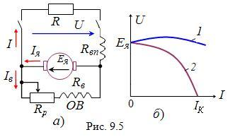

У генератора смешанного возбуждения (рис. 9.5, а) при согласном включении последовательной и параллельной  обмоток их магнитные потоки складываются, и дополнительная ЭДС, обусловленная магнитным потоком последовательной обмотки, компенсирует падение напряжения в обмотке якоря и уменьшение ЭДС Ея от снижения тока возбуждения. В этом случае при изменении тока нагрузки I напряжение U остаётся практически постоянным (кривая 1, рис. 9.5, б). При встречном включении обмоток возбуждения при увеличении тока нагрузки напряжение на выходе генератора резко падает (кривая 2, рис. 9.5, б). Такую вольт-амперную характеристику, называемую крутопадающей, имеют генераторы для дуговой сварки (типа ПСО-300 и ПСГ-500), обеспечивающие постоянство тока при колебаниях сопротивления цепи вследствие изменения длины дуги.
|